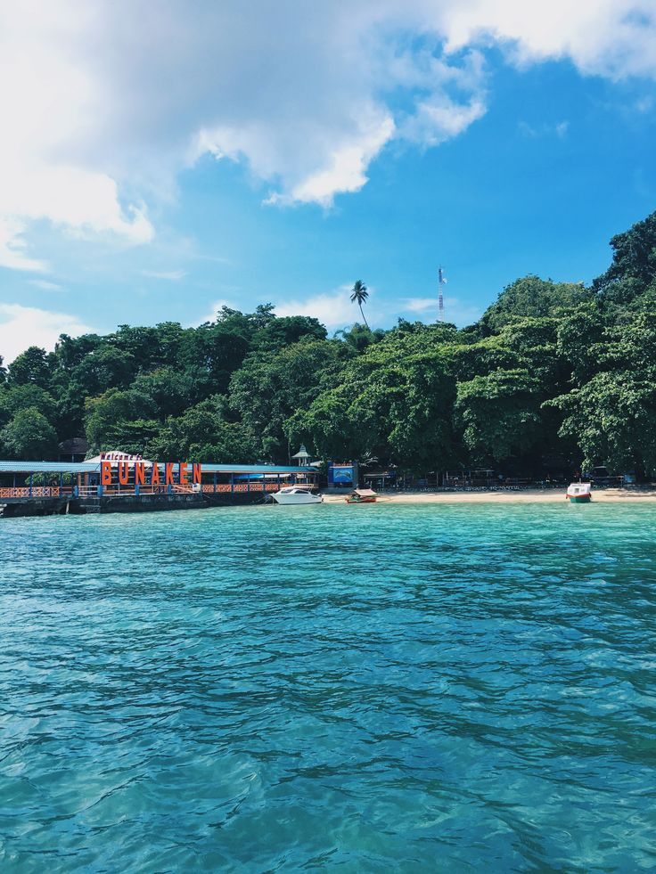

Destinasi Populer Sulawesi Utara
1. Taman Nasional Bunaken

Taman Nasional Bunaken merupakan salah satu destinasi wisata bahari terbaik di Indonesia. Terletak di utara Pulau Sulawesi, taman nasional ini terkenal dengan Taman Nasional Bunaken adalah taman laut yang terletak di Sulawesi Utara, Indonesia. Taman ini terletak di Segitiga Terumbu Karang yang menjadi habitat bagi 390 spesies terumbu karang dan juga berbagai spesies ikan, moluska, reptil, dan mamalia laut. Taman Nasional Bunaken merupakan perwakilan ekosistem laut Indonesia, meliputi padang rumput laut, terumbu karang, dan ekosistem pantai. Taman nasional ini didirikan pada tahun 1991 dan meliputi wilayah seluas 890.65 km². 97% dari taman nasional ini merupakan habitat laut, sementara 3% sisanya merupakan daratan, meliputi lima pulau: Bunaken, Manado Tua, Mantehage, Naen, dan Siladen.
Sumber Wikipedia
2. Taman Nasional Tangkoko

Cagar Alam Gunung Tangkoko Batuangus adalah cagar alam di Kecamatan Bitung Utara, Kota Bitung, Sulawesi Utara. Cagar alam seluas sekitar 3.196 hektare ini merupakan tempat perlindungan monyet hitam sulawesi, tarsius, kuskus, maleo, dan rangkong. Di dalam kawasan ini terdapat dua jenis ekosistem, yaitu hutan hujan dan hutan lumut. Di eksositem hutan hujan tumbuh beringin, aras dan nantu. Sedangkan di ekosistem hutan lumut tumbuh bunga edelweis dan kantong semar. Secara geografis, cagar alam ini terletak di antara 125°3' -125°15' BT dan 1°30'-1°34' LU. Topografinya beragam dari landai sampai bergunung serta dari hutan pantai, hutan dataran rendah, hutan pegunungan dan hutan lumut. Kawasan ini mempunyai dua puncak gunung yakni Tangkoko (1.109 mdpl.) dan Batuangus (450 mdpl.) Currah hujan rata-rata sebanyak 2.500 - 3.000 mm/ tahun dengan suhu rata-rata 20-25° C. Musim kemarau terjadi selama bulan April-November.
Sumber Wikipedia
3. Danau Linow

Danau Linouw (atau Linow) adalah sebuah danau vulkanik yang terletak diluar Tomohon, dekat Manado, Indonesia. Beberapa lubang hidrotermal memuntahkan gas panas dari tepi dan kedalaman danau. Komposisi kimiawi yang berubah dari danau berarti warnanya sering berubah warna, mulai dari merah, hijau tua, dan bahkan biru gelap. Danau ini berbatasan di sisi-sisinya oleh Gunung Lokon dan Gunung Mahawu. Danau ini memiliki bau seperti telur busuk dikarenakan oleh jumlah belerang yang sangat besar di danau tersebut. Kata "Linouw" berasal dari bahasa Minahasa yang berarti "tempat berkumpulnya air".
Danau Linow terbentuk karena letusan gunung berapi sekitar 500.000 tahun yang lalu. Sisa-sisa gunung berapi masih dapat dilihat berupa adanya sumber belerang di sekitar danau. Berjarak 30 km dari Manado, Danau Linouw dapat dicapai dengan perjalanan sejauh 3 km ke arah barat Tomohon, yang memakan waktu sekitar satu jam. Selama perjalanan, Anda dapat menikmati kehijauan bukit dan pepohonan yang indah. Gunung Lokon yang masih aktif juga terlihat dan menambah keindahan panorama sekitar. Dengan bentuknya yang hampir segitiga sempurna, gunung ini adalah pemandangan hijau yang memanjakan mata. Pengunjung dapat berjalan-jalan di sekitar tepi danau, namun berenang tidak dianjurkan karena kandungan sulfur yang tinggi. Paparan sulfur dapat menyebabkan cedera serius dan berakibat fatal.
Sumber Wikipedia
4. Air Terjun Tumimperas

Kota Tomohon adalah kota di provinsi Sulawesi Utara, Indonesia, yang merupakan enklave dari Kabupaten Minahasa. Sebelum tahun 2003, Tomohon merupakan salah satu kecamatan di Kabupaten Minahasa. Dalam perkembangannya, Tomohon mengalami kemajuan, sehingga ada aspirasi dari warga Tomohon untuk meningkatkan status Tomohon menjadi sebuah kota. Salah satu objek wisata yang ada di Kota Tomohon, yaitu: Air Terjun Tumimperas. Air terjun Tumimperas yang berada di kelurahan Pinaras Kecamatan Tomohon Selatan. Dari pusat Kota Tomohon ke lokasi air terjun berjarak 7 km. Dengan ketinggian 70 m dan dapat dengan mudah dijangkau dengan kendaaran. Dan ketika anda keluar dari mobil, dapat langsung mendengar suara air jatuh dan menandai lokasi air terjun yang begitu dekat. Dikelilingi oleh pemandangan yang alam asri dan alami nan memikat hati.
Sumber Wikipedia
5. Gunung Klabat

Gunung Klabat merupakan gunung tertinggi di Provinsi Sulawesi Utara. Puncak ketinggiannya mencapai sekitar 2100 mdpl. Gunung ini oleh masyarakat Tonsea (Minahasa Utara) disebut juga Gunung Tamporok. Gunung ini merupakan objek wisata alam dan dapat ditelusuri mulai dari Airmadidi (Ibu Kota Kabupaten Minahasa Utara). Gunung ini merupakan gunung api yang tidak aktif lagi. Puncak Gunung Klabat ini mempunyai kepundan berbentuk danau kecil dengan air yang sangat jernih. Mendaki gunung klabat melalui daerah air madidi ditempuh sekitar 8 jam perjalanan.
Sumber Wikipedia